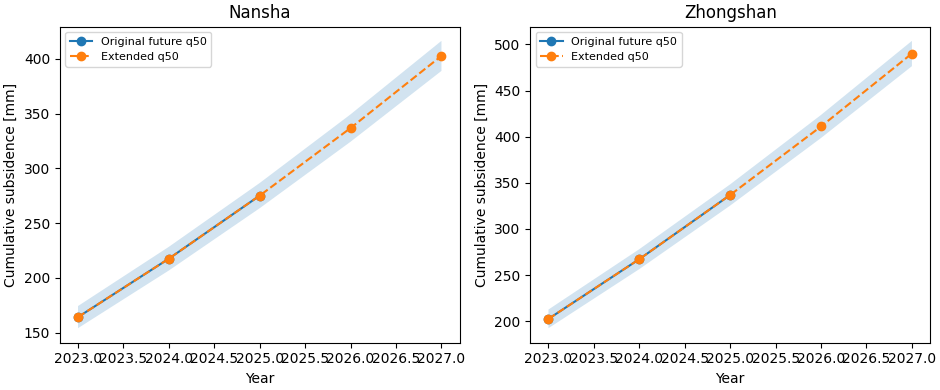

Note
Go to the end to download the full example code.
Extend forecast CSVs to later years#
This example teaches you how to use GeoPrior’s
extend-forecast utility.
Unlike the plotting scripts, this command is a forecast-product builder. It takes an existing future forecast CSV and extends it to one or more later years by simple extrapolation.
Why this matters#
In many workflows, the trained model only emits forecasts to a fixed horizon, but downstream reporting still needs:
one or two extra years,
a quick scenario extension,
or a compact artifact for later mapping and hotspot analysis.
This builder helps create those extended future CSVs directly from existing forecast exports.
Imports#
We call the real production entrypoint from the project code. Then we read the generated CSVs back in and build one compact teaching preview.
from __future__ import annotations
import tempfile
from pathlib import Path
import matplotlib.pyplot as plt
import numpy as np
import pandas as pd
from geoprior._scripts.extend_forecast import (
extend_forecast_main,
)
Build compact synthetic forecast archives#
The production builder resolves, per city:
one eval CSV,
one future CSV,
and then extends the future horizon.
For the lesson, we create synthetic cumulative forecast archives for:
Nansha
Zhongshan
with:
eval years = 2020, 2021, 2022
future years = 2023, 2024, 2025
The synthetic paths are designed so that:
Zhongshan has a higher cumulative level,
the final years contain a clean trend,
and uncertainty widens gently with horizon.
rng = np.random.default_rng(21)
eval_years = [2020, 2021, 2022]
future_years = [2023, 2024, 2025]
n_points = 70
def _city_forecasts(
*,
city: str,
base_shift: float,
trend_shift: float,
) -> tuple[pd.DataFrame, pd.DataFrame]:
rows_eval: list[dict[str, object]] = []
rows_future: list[dict[str, object]] = []
for sample_idx in range(n_points):
x = 100.0 + 0.55 * sample_idx
y = 250.0 + 0.18 * sample_idx
local = rng.normal(0.0, 1.2)
slope = 14.0 + trend_shift + 0.03 * sample_idx + local
start = 18.0 + base_shift + 0.35 * sample_idx
# Annual increments.
inc_2020 = start
inc_2021 = start + 0.65 * slope
inc_2022 = start + 1.00 * slope
inc_2023 = start + 1.28 * slope
inc_2024 = start + 1.55 * slope
inc_2025 = start + 1.83 * slope
# Cumulative q50 path.
q50_2020 = inc_2020
q50_2021 = q50_2020 + inc_2021
q50_2022 = q50_2021 + inc_2022
q50_2023 = q50_2022 + inc_2023
q50_2024 = q50_2023 + inc_2024
q50_2025 = q50_2024 + inc_2025
# Eval actuals.
act_2020 = max(0.1, q50_2020 + rng.normal(0.0, 2.0))
act_2021 = max(0.1, q50_2021 + rng.normal(0.0, 2.5))
act_2022 = max(0.1, q50_2022 + rng.normal(0.0, 3.0))
def _band(center: float, year: int) -> tuple[float, float]:
width = 8.0 + 0.7 * (year - 2020)
return max(0.0, center - width), center + width
for step, (year, q50, actual) in enumerate(
[
(2020, q50_2020, act_2020),
(2021, q50_2021, act_2021),
(2022, q50_2022, act_2022),
],
start=1,
):
q10, q90 = _band(q50, year)
rows_eval.append(
{
"city": city,
"sample_idx": sample_idx,
"forecast_step": step,
"coord_x": float(x),
"coord_y": float(y),
"coord_t": int(year),
"subsidence_actual": float(actual),
"subsidence_q10": float(q10),
"subsidence_q50": float(q50),
"subsidence_q90": float(q90),
"subsidence_unit": "mm",
}
)
# Future rows
for step, (year, q50) in enumerate(
[
(2023, q50_2023),
(2024, q50_2024),
(2025, q50_2025),
],
start=1,
):
q10, q90 = _band(q50, year)
rows_future.append(
{
"city": city,
"sample_idx": sample_idx,
"forecast_step": step,
"coord_x": float(x),
"coord_y": float(y),
"coord_t": int(year),
"subsidence_q10": float(q10),
"subsidence_q50": float(q50),
"subsidence_q90": float(q90),
"subsidence_unit": "mm",
}
)
return pd.DataFrame(rows_eval), pd.DataFrame(rows_future)
ns_eval_df, ns_future_df = _city_forecasts(
city="Nansha",
base_shift=0.0,
trend_shift=0.0,
)
zh_eval_df, zh_future_df = _city_forecasts(
city="Zhongshan",
base_shift=8.0,
trend_shift=1.8,
)
print("Nansha future preview")
print(ns_future_df.head(6).to_string(index=False))
print("")
print("Zhongshan future preview")
print(zh_future_df.head(6).to_string(index=False))
Nansha future preview
city sample_idx forecast_step coord_x coord_y coord_t subsidence_q10 subsidence_q50 subsidence_q90 subsidence_unit
Nansha 0 1 100.00 250.00 2023 104.181447 114.281447 124.381447 mm
Nansha 0 2 100.00 250.00 2024 143.848766 154.648766 165.448766 mm
Nansha 0 3 100.00 250.00 2025 187.556632 199.056632 210.556632 mm
Nansha 1 1 100.55 250.18 2023 104.241533 114.341533 124.441533 mm
Nansha 1 2 100.55 250.18 2024 143.550023 154.350023 165.150023 mm
Nansha 1 3 100.55 250.18 2025 186.771014 198.271014 209.771014 mm
Zhongshan future preview
city sample_idx forecast_step coord_x coord_y coord_t subsidence_q10 subsidence_q50 subsidence_q90 subsidence_unit
Zhongshan 0 1 100.00 250.00 2023 136.679488 146.779488 156.879488 mm
Zhongshan 0 2 100.00 250.00 2024 184.610276 195.410276 206.210276 mm
Zhongshan 0 3 100.00 250.00 2025 236.629206 248.129206 259.629206 mm
Zhongshan 1 1 100.55 250.18 2023 145.444572 155.544572 165.644572 mm
Zhongshan 1 2 100.55 250.18 2024 197.621564 208.421564 219.221564 mm
Zhongshan 1 3 100.55 250.18 2025 254.590528 266.090528 277.590528 mm
Write the synthetic CSV inputs#
The production command works from CSV files, so the lesson keeps the same workflow.
tmp_dir = Path(
tempfile.mkdtemp(prefix="gp_sg_extend_forecast_")
)
ns_eval_csv = tmp_dir / "nansha_eval.csv"
ns_future_csv = tmp_dir / "nansha_future.csv"
zh_eval_csv = tmp_dir / "zhongshan_eval.csv"
zh_future_csv = tmp_dir / "zhongshan_future.csv"
ns_eval_df.to_csv(ns_eval_csv, index=False)
ns_future_df.to_csv(ns_future_csv, index=False)
zh_eval_df.to_csv(zh_eval_csv, index=False)
zh_future_df.to_csv(zh_future_csv, index=False)
print("")
print("Input files")
for p in [
ns_eval_csv,
ns_future_csv,
zh_eval_csv,
zh_future_csv,
]:
print(" -", p.name)
Input files
- nansha_eval.csv
- nansha_future.csv
- zhongshan_eval.csv
- zhongshan_future.csv
Run the real forecast-extension builder#
We ask the builder to:
interpret the inputs as cumulative subsidence,
keep the output in cumulative form,
extend to the explicit years 2026 and 2027,
use a short linear-fit window,
and widen uncertainty with a sqrt rule.
Because we request both cities, the script writes one CSV per city with a city suffix added to the output stem.
out_stem = tmp_dir / "future_extended_gallery.csv"
extend_forecast_main(
[
"--ns-eval",
str(ns_eval_csv),
"--ns-future",
str(ns_future_csv),
"--zh-eval",
str(zh_eval_csv),
"--zh-future",
str(zh_future_csv),
"--subsidence-kind",
"cumulative",
"--out-kind",
"same",
"--method",
"linear_fit",
"--window",
"3",
"--years",
"2026",
"2027",
"--unc-growth",
"sqrt",
"--unc-scale",
"1.0",
"--out",
str(out_stem),
],
prog="extend-forecast",
)
[OK] Nansha: wrote C:\Users\Daniel\AppData\Local\Temp\gp_sg_extend_forecast_puavles_\future_extended_gallery_nansha.csv (manual)
[OK] Zhongshan: wrote C:\Users\Daniel\AppData\Local\Temp\gp_sg_extend_forecast_puavles_\future_extended_gallery_zhongshan.csv (manual)
Inspect the produced files#
The builder writes one output CSV per city in multi-city mode.
Written files
- future_extended_gallery_nansha.csv
- future_extended_gallery_zhongshan.csv
Read the extended outputs#
We read both city-level outputs back in and inspect the newly added years.
def _pick_city_output(paths: list[Path], city_slug: str) -> Path:
for p in paths:
if city_slug in p.name.lower():
return p
raise FileNotFoundError(city_slug)
ns_out_csv = _pick_city_output(written, "nansha")
zh_out_csv = _pick_city_output(written, "zhongshan")
ns_ext = pd.read_csv(ns_out_csv)
zh_ext = pd.read_csv(zh_out_csv)
print("")
print("Extended Nansha output")
print(
ns_ext.loc[ns_ext["coord_t"].isin([2025, 2026, 2027])]
.head(8)
.to_string(index=False)
)
print("")
print("Extended Zhongshan output")
print(
zh_ext.loc[zh_ext["coord_t"].isin([2025, 2026, 2027])]
.head(8)
.to_string(index=False)
)
Extended Nansha output
city sample_idx forecast_step coord_x coord_y coord_t subsidence_q10 subsidence_q50 subsidence_q90 subsidence_unit extended extend_kind extend_method unc_growth
Nansha 0 3 100.00 250.00 2025 187.556632 199.056632 210.556632 mm NaN NaN NaN NaN
NaN 0 4 100.00 250.00 2026 234.918894 247.408843 259.898792 mm True cumulative linear_fit sqrt
NaN 0 5 100.00 250.00 2027 286.067149 299.769534 313.471919 mm True cumulative linear_fit sqrt
Nansha 1 3 100.55 250.18 2025 186.771014 198.271014 209.771014 mm NaN NaN NaN NaN
NaN 1 4 100.55 250.18 2026 233.521403 246.011352 258.501302 mm True cumulative linear_fit sqrt
NaN 1 5 100.55 250.18 2027 283.930755 297.633140 311.335525 mm True cumulative linear_fit sqrt
Nansha 2 3 101.10 250.36 2025 187.725157 199.225157 210.725157 mm NaN NaN NaN NaN
NaN 2 4 101.10 250.36 2026 234.443594 246.933543 259.423493 mm True cumulative linear_fit sqrt
Extended Zhongshan output
city sample_idx forecast_step coord_x coord_y coord_t subsidence_q10 subsidence_q50 subsidence_q90 subsidence_unit extended extend_kind extend_method unc_growth
Zhongshan 0 3 100.00 250.00 2025 236.629206 248.129206 259.629206 mm NaN NaN NaN NaN
NaN 0 4 100.00 250.00 2026 292.348991 304.838941 317.328890 mm True cumulative linear_fit sqrt
NaN 0 5 100.00 250.00 2027 351.901988 365.604373 379.306758 mm True cumulative linear_fit sqrt
Zhongshan 1 3 100.55 250.18 2025 254.590528 266.090528 277.590528 mm NaN NaN NaN NaN
NaN 1 4 100.55 250.18 2026 315.947421 328.437371 340.927320 mm True cumulative linear_fit sqrt
NaN 1 5 100.55 250.18 2027 381.835770 395.538155 409.240540 mm True cumulative linear_fit sqrt
Zhongshan 2 3 101.10 250.36 2025 247.695298 259.195298 270.695298 mm NaN NaN NaN NaN
NaN 2 4 101.10 250.36 2026 306.403781 318.893730 331.383680 mm True cumulative linear_fit sqrt
Summarize before vs after#
A compact summary makes the extension behavior clearer.
We compute city-level mean q10/q50/q90 paths before and after the extension.
def _mean_path(df: pd.DataFrame) -> pd.DataFrame:
return (
df.groupby("coord_t", as_index=False)[
["subsidence_q10", "subsidence_q50", "subsidence_q90"]
]
.mean()
.sort_values("coord_t")
)
ns_before = _mean_path(ns_future_df)
zh_before = _mean_path(zh_future_df)
ns_after = _mean_path(ns_ext)
zh_after = _mean_path(zh_ext)
print("")
print("Mean Nansha path after extension")
print(ns_after.to_string(index=False))
print("")
print("Mean Zhongshan path after extension")
print(zh_after.to_string(index=False))
Mean Nansha path after extension
coord_t subsidence_q10 subsidence_q50 subsidence_q90
2023 154.172357 164.272357 174.372357
2024 206.809184 217.609184 228.409184
2025 263.648147 275.148147 286.648147
2026 324.299247 336.789196 349.279146
2027 388.896646 402.599031 416.301416
Mean Zhongshan path after extension
coord_t subsidence_q10 subsidence_q50 subsidence_q90
2023 192.548900 202.648900 212.748900
2024 256.558983 267.358983 278.158983
2025 325.380565 336.880565 348.380565
2026 398.609137 411.099087 423.589036
2027 476.388536 490.090921 503.793306
Build one compact visual preview#
This preview is not part of the production builder itself. It is a teaching aid for the gallery page.
- Left:
Nansha before/after q50 path.
- Right:
Zhongshan before/after q50 path.
The shaded ribbons show the q10-q90 interval after extension.
fig, axes = plt.subplots(
1,
2,
figsize=(9.4, 3.9),
constrained_layout=True,
)
for ax, city, before, after in [
(axes[0], "Nansha", ns_before, ns_after),
(axes[1], "Zhongshan", zh_before, zh_after),
]:
ax.plot(
before["coord_t"].to_numpy(int),
before["subsidence_q50"].to_numpy(float),
marker="o",
label="Original future q50",
)
ax.plot(
after["coord_t"].to_numpy(int),
after["subsidence_q50"].to_numpy(float),
marker="o",
linestyle="--",
label="Extended q50",
)
ax.fill_between(
after["coord_t"].to_numpy(int),
after["subsidence_q10"].to_numpy(float),
after["subsidence_q90"].to_numpy(float),
alpha=0.2,
)
ax.set_title(city)
ax.set_xlabel("Year")
ax.set_ylabel("Cumulative subsidence [mm]")
ax.legend(fontsize=8)

Learn how to read this builder#
The extension logic starts from an existing future forecast CSV. It does not retrain the model.
The practical reading order is:
inspect the original future path up to its last available year;
check which extension rule was requested;
verify the new years added to the tail;
inspect how the q10-q90 interval widens after extension.
In other words:
this is a forecast-product builder,
not a new model inference stage.
Explicit years vs add-years#
The script supports two extension styles.
- Explicit years:
add the exact years requested by
--years.- Add N years:
if
--yearsis omitted, append the next--add-yearsyears after the existing tail.
The lesson uses explicit years because it makes the page easier to read, but both workflows are supported by the real command.
Why subsidence-kind and out-kind matter#
The command distinguishes:
the meaning of the input series,
and the meaning of the output series.
subsidence-kindtells the builder whether the source CSV represents cumulative values or annual/rate-style values.
out-kindcontrols whether the written extension should stay in the same convention, or be converted to cumulative or rate form.
This is useful because later scripts may consume different forecast conventions.
Why uncertainty growth matters#
The extrapolated years are less certain than the original trained horizon, so the command exposes:
holdsqrtlinear
uncertainty-growth modes, plus an unc-scale multiplier.
The visual preview above makes that visible through the widening q10-q90 ribbon in 2026 and 2027.
Why this page belongs in tables_and_summaries#
This script produces a reusable forecast CSV artifact that later builders can consume.
A useful workflow is:
generate the original future forecast,
extend the future CSV if later years are needed,
pass the extended CSV to hotspot or spatial-summary builders,
only then move to paper-ready maps or narrative tables.
That keeps:
model inference,
forecast extrapolation,
and final visualization
clearly separated.
Command-line version#
The same lesson can be reproduced from the CLI.
Legacy dispatcher:
python -m scripts extend-forecast \
--ns-eval results/nansha_eval.csv \
--ns-future results/nansha_future.csv \
--zh-eval results/zhongshan_eval.csv \
--zh-future results/zhongshan_future.csv \
--subsidence-kind cumulative \
--out-kind same \
--method linear_fit \
--window 3 \
--years 2026 2027 \
--unc-growth sqrt \
--out future_extended
Add the next 2 years instead:
python -m scripts extend-forecast \
--ns-src results/nansha_run \
--zh-src results/zhongshan_run \
--split auto \
--add-years 2 \
--method linear_last \
--out future_extended
Modern CLI:
geoprior build extend-forecast \
--ns-src results/nansha_run \
--zh-src results/zhongshan_run \
--split auto \
--add-years 2 \
--subsidence-kind cumulative \
--out-kind same \
--method linear_fit \
--window 3 \
--unc-growth sqrt \
--out future_extended
The gallery page teaches the builder. The command line reproduces it in a workflow.
Total running time of the script: (0 minutes 1.508 seconds)